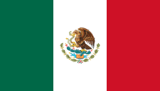

| Flagge |  |
|---|---|
| Hauptstadt | Mexico City |
| Einwohnerzahl | 124.574.795 |
| Fläche | 1.972.550 km² |
Mexico amtlich Vereinigte Mexikanische Staaten, span.: Estados Unidos Mexicanos, ist eine Bundesrepublik in Nordamerika, die 31 Bundesstaaten und den Hauptstadtdistrikt Mexiko-Stadt umfasst. Im Norden grenzt Mexiko an die Vereinigten Staaten von Amerika (USA), im Süden und Westen an den Pazifischen Ozean, im Südosten an Guatemala, Belize und an das Karibische Meer, im Osten an den Golf von Mexiko. Mit einer Gesamtfläche von fast zwei Millionen Quadratkilometern ist Mexiko das fünftgrößte Land auf dem amerikanischen Doppelkontinent, global liegt das Land an vierzehnter Stelle. Weltweit liegt Mexiko mit einer Bevölkerungszahl von etwa 125 Millionen Menschen auf Platz elf und ist das einwohnerreichste spanischsprachige Land.
Das Land ist nach der Hauptstadt der Azteken, Mexico-Tenochtitlan, benannt. Für die Herkunft der Bezeichnung Mexico (mē/ʃ/ĭ'co) gibt es verschiedene, aber unbefriedigende Erklärungen. Nach einer Erklärung stammt der Teil mē von mĕtl, was die Agavenpflanze (auch: Maguey) bezeichnet. Der Teil xĭ soll von xīctli (Nabel) abgeleitet sein und zusammen mit dem im Nahuatl häufigen Ortssuffix co beziehungsweise ko die Bezeichnung „der Platz, wo der Nabel (der Mittelpunkt) der Maguey liegt“ ergeben. Diese Ableitung ist jedoch unmöglich, da in den ersten beiden Fällen die im Nahuatl bedeutungsunterscheidende Vokallänge unterschiedlich ist.[4] Stattdessen wird der Ortsname als regelmäßige Bildung von der in den Quellen gut belegten Volksbezeichnung mē/ʃ/ĭ'tin (Plural) abgeleitet, deren Etymologie jedoch wie bei ähnlichen Namen undurchsichtig ist